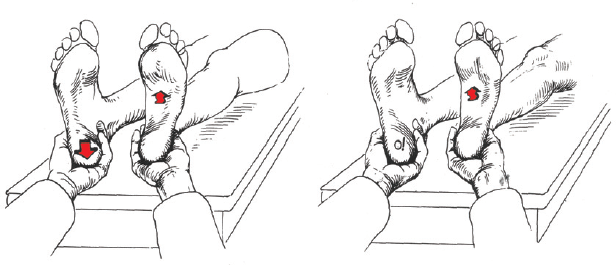

Um paciente de 35 anos é encaminhado por um perito do INSS para o setor de fisioterapia apresentando história de dor na região lombossacra e parestesia de membro inferior direito. A carta de encaminhamento do perito solicita um relatório fisioterapêutico sobre as condições cinético-funcionais do paciente. Durante a avaliação, o paciente reclama que não consegue trabalhar há mais de um ano e que a única alternativa para sua situação é ser aposentado por invalidez. Ao exame físico, o Fisioterapeuta não constata alterações clínicas que possam estar desencadeando as dores relatadas. Ao realizar o teste da elevação da perna retificada, o paciente informa que não consegue realizar a elevação. O Fisioterapeuta decide aplicar o Teste de Hoover, ilustrado na figura abaixo.
HOPPENFELD, Stanley. Propedêutica ortopédica: coluna e extremidades. Rio de Janeiro: Atheneu, 2001.
Com o auxilio das informações contidas no caso clínico e na figura acima, pode-se concluir que o teste representado